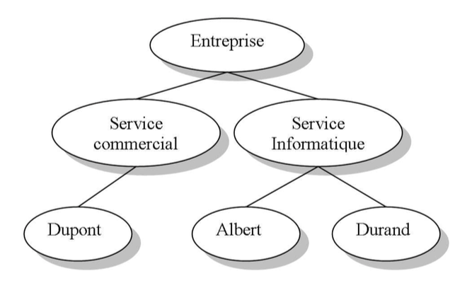
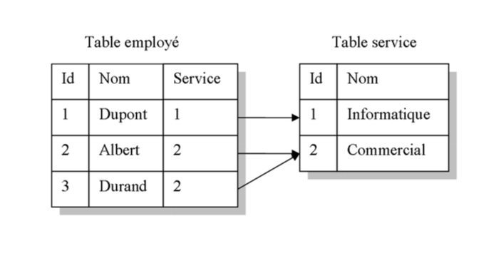

Un annuaire électronique peut être vu comme un carnet d’adresse téléphonique ou encore les Pages Blanches ou les Pages Jaunes. Son but est de faciliter la localisation de ressources en fonction de critères de recherche. Il permet donc de centraliser des informations et de les redistribuer. Un des meilleurs services d’annuaire mis en place sur Internet est sans doute le DNS (Domain Name System). Ce dernier permet la distribution de la gestion de l’espace de nommage des machines sur Internet (pour plus d’information voir Le Standard LDAP).
Un annuaire est une base de données spécialisée possédant au moins les particularités suivantes :
Optimisé pour la lecture
Un annuaire étant destiné à localiser des ressources, il est plus souvent sollicité pour des opérations de lecture plutôt que des opérations d’écriture. A l’inverse, une base de données effectue des quantités semblables de lectures et d’écritures.
Pas de transaction complexe
Dans un annuaire, les mises à jours ne concernent pas de gros volume de données. Contrairement aux bases de données, les modifications se font sur peu d’informations à la fois et ne nécessitent pas un contrôle complexe de l’intégrité des données.
Accessible à distance
Contrairement aux bases de données qui sont conçues pour une utilisation en entreprise, un annuaire est souvent utilisé sur un réseau à faible débit comme Internet. Pour cela, un service d’annuaire doit offrir un protocole réseau léger et performant. De plus, les deux systèmes distants (serveur et client) doivent utiliser le même protocole d’interrogation. Issu du monde Internet, LDAP (Lightweight Directory Access Protocol) est un standard ouvert et facile. Comme son nom l’indique sa principale caractéristique est la légèreté.
Coopération entre annuaires
Etant donné qu’il est impossible de centraliser toutes les informations concernant une ressource, les annuaires peuvent communiquer entre eux. Ainsi, si un annuaire ne contient pas l’information demandée, la requête est déléguée à un autre annuaire qui effectuera la recherche et retournera le résultat au client.
Classification hiérarchique de l’information
Contrairement aux bases de données relationnelles, un annuaire organise ses don- nées de façon hiérarchique. Les figures 1.1 et 1.2 ci-dessous donnent un exemple d’organisation hiérarchique et relationnelle.

Fig. 1.1 Organisation hiérarchique des données

Fig. 1.2 - Organisation relationnelle des données
Espace de noms homogènes
Quelle que soit la nature de l’information à retrouver dans l’annuaire (personne, imprimante...), il doit être possible de nommer tous les éléments de la même façon.
Gestion des habilitations
Un annuaire doit permettre de définir des habilitations sur les données en fonction des utilisateurs.
S’appuie sur une base de données
Le protocole LDAP n’étant qu’une interface pour interroger un service d’annuaire, ce dernier doit s’appuyer sur une base de données pour stocker ses informations. Le tableau 1.1 donne quelques exemples de serveur d’annuaire et de la base de données utilisée.
| Annuaire | Base de donnée |
|---|---|
| IBM SecureWay Directory | SecureWay, l’annuaire LDAP d’IBM s’appuie sur la base de données DB2. |
| Oracle 8i/9i/10g | Le system de gestion de base de données Oracle offre une interface LDAP pour utiliser la base de données comme un annuaire. |
| OpenLDAP | Serveur d’annuaire LDAP issu du monde des logi- ciels libre, OpenLDAP peut s’appuyer sur différentes bases de données (le plus souvent la base de données Berkeley DB). |
Tab. 1.1 – Exemple de logiciel d’annuaire